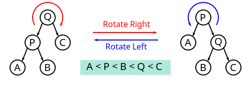

Treap树
Treap树是一个合成词，把Tree和Heap各取一半组合而成，Treap是树和堆的结合。
二叉搜索树的每个结点有一个键值，除此之外，Treap树为每个结点人为添加一个被称为优先级的权值。对于键值来说，这棵树是排序二叉树；对于优先级来说，这棵树是一个堆。堆的特征是：在这棵树的任意子树上，根结点的优先级最大。
Treap树的重要性质：令每个结点的优先级互不相等，那么整棵树的形态是唯一的，和元素的插入顺序没有关系。
如果每个结点的优先级进行随机赋值，那么生成的Treap树的形态也是随机的。这虽然不能保证每次生成的Treap树一定是平衡的，但是期望的插入、删除、查找的时间复杂度都是O(logn)的。
把新结点node插入到Treap树的过程有以下两步：
- 用朴素的插入方法把
node按键值的大小插入到合适的子树上。 - 给
node随机分配一个优先级，如果node的优先级违反了堆的性质，即它的优先级比父节点高，那么让node往上走，替代父节点，最后得到一个新的Treap树。调整使用的技巧是旋转，包括左旋和右旋，其示意图如下。

Treap树的删除有两种情况。如果待删除的节点x是叶子结点，直接删除。如果待删除的节点x有两个子结点，那么找到优先级最大的子结点，把x向相反的方向旋转，也就是把x向树的下层调整，直到x被旋转到叶子结点，然后直接删除。
例题
您需要写一种数据结构（可参考题目标题），来维护一些数，其中需要提供以下操作：
- 插入数值 x。
- 删除数值 x(若有多个相同的数，应只删除一个)。
- 查询数值 x 的排名(若有多个相同的数，应输出最小的排名)。
- 查询排名为 x 的数值。
- 求数值 x 的前驱(前驱定义为小于 x 的最大的数)。
- 求数值 x 的后继(后继定义为大于 x 的最小的数)。
#include <iostream>
#include <climits>
using namespace std;
const int N = 100000 + 10;
struct Node{
int l;
int r;
int key;
int val;
int cnt;
int size;
};
struct Node t[N];
int root;
int idx;
int getNode(int key){
++idx;
t[idx].key = key;
t[idx].val = rand();
t[idx].size = 1;
t[idx].cnt = 1;
return idx;
}
//用孩子的信息更新当前节点
void pushup(int p){
t[p].size = t[t[p].l].size + t[t[p].r].size + t[p].cnt;
}
//左旋
void zag(int &p){
int q = t[p].r;
t[p].r = t[q].l;
t[q].l = p;
p = q;
pushup(t[p].l); // 需要先更新孩子
pushup(p);
}
//右旋
void zig(int &p){
int q = t[p].l;
t[p].l = t[q].r;
t[q].r = p;
p = q;
pushup(t[p].r);
pushup(p);
}
void insert(int &p, int key){
if(p == 0){
p = getNode(key);
pushup(p);
return;
}
if(t[p].key < key){
insert(t[p].r,key);
if(t[t[p].r].val > t[p].val){
zag(p);
}
}else if(t[p].key > key){
insert(t[p].l, key);
if(t[t[p].l].val > t[p].val){
zig(p);
}
}else{
t[p].cnt++;
}
pushup(p);
}
void remove(int &p, int key){
if(p == 0){
return;
}
if(t[p].key < key){
remove(t[p].r,key);
}else if(t[p].key > key){
remove(t[p].l, key);
}else{
if(t[p].cnt > 1){
t[p].cnt--;
}else{
if(t[p].l || t[p].r){
if(t[p].r == 0 || t[t[p].l].val > t[t[p].r].val){
zig(p);
remove(t[p].r,key);
}else{
zag(p);
remove(t[p].l,key);
}
}else{
p = 0;
}
}
}
pushup(p); // 一定要沿路更新节点
}
int getRankByKey(int p,int key){
if(p == 0){
return 0;
}
if(t[p].key < key){
//去右边找
return t[t[p].l].size + t[p].cnt + getRankByKey(t[p].r,key);
}else if(t[p].key > key){
//去左边找
return getRankByKey(t[p].l,key);
}else{
return t[t[p].l].size + 1;
}
}
int getKeyByRank(int p, int rank){
if(p == 0 || t[p].size < rank){
return 0;
}
if(t[t[p].l].size >= rank){
return getKeyByRank(t[p].l,rank);
}else if(t[t[p].l].size + t[p].cnt >= rank){
return t[p].key;
}else{
return getKeyByRank(t[p].r,rank - t[t[p].l].size - t[p].cnt);
}
}
int getPrev(int p, int key){
if(p == 0){
return INT_MIN;
}
if(t[p].key >= key){
return getPrev(t[p].l,key);
}else{
return max(t[p].key,getPrev(t[p].r,key));
}
}
int getNext(int p,int key){
if(p == 0){
return INT_MAX;
}
if(t[p].key <= key){
return getNext(t[p].r,key);
}else{
return min(t[p].key,getNext(t[p].l,key));
}
}
int main(){
int n;
scanf("%d",&n);
int op,x;
for(int i=0;i<n;i++){
scanf("%d%d",&op,&x);
switch(op){
case 1:
insert(root,x);
break;
case 2:
remove(root,x);
break;
case 3:
printf("%d\n",getRankByKey(root,x));
break;
case 4:
printf("%d\n",getKeyByRank(root,x));
break;
case 5:
printf("%d\n",getPrev(root,x));
break;
case 6:
printf("%d\n",getNext(root,x));
break;
default:
break;
}
}
return 0;
}
有时候为了方便，初始化的时候，会插入一个负无穷结点和一个正无穷的结点，这样可以避免处理一些特殊情况。